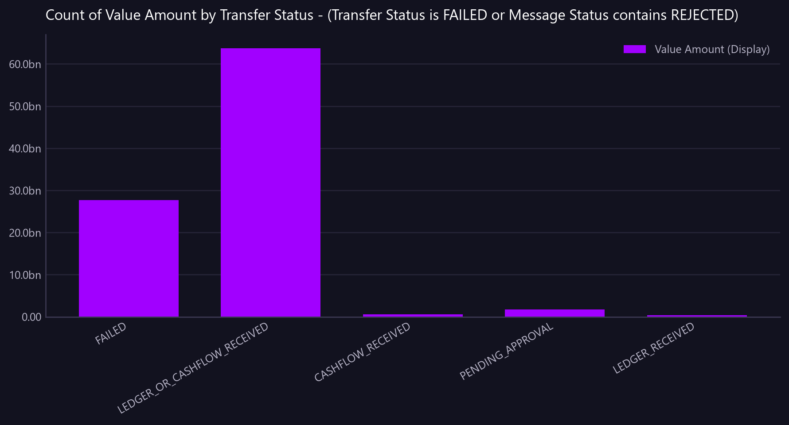

Count of Value Amount by Transfer Status - (Transfer Status is FAILED or Message Status contains REJECTED)
Failed and rejected transfers by status, with count and value at risk. States that the failure reason is not captured anywhere in the data.
Asked as Break down transfers that failed or were rejected by their status, with the count and total value in each, and tell me why they failed.

count peaks at 98, against 63.7bn for the largest series, so plotting it would be a flat line on the axis. It is in the table.
Commentary
The report provides a breakdown of transfers that either failed or were rejected, categorized by their status, along with the count and total value for each status. The most significant category is "FAILED," with 98 transfers totaling a value of 27,651,750,602.51. The "LEDGER_OR_CASHFLOW_RECEIVED" status also represents a substantial portion, with 85 transfers amounting to 63,747,371,116.90. The "CASHFLOW_RECEIVED," "PENDING_APPROVAL," and "LEDGER_RECEIVED" statuses have significantly lower counts and values. The operations team should particularly focus on the "FAILED" and "LEDGER_OR_CASHFLOW_RECEIVED" categories due to their high values and counts, which may indicate areas needing further investigation.
| Transfer Status | count | Value Amount (Display) |
|---|---|---|
| FAILED | 98.00 | 27,651,750,602.51 |
| LEDGER_OR_CASHFLOW_RECEIVED | 85.00 | 63,747,371,116.90 |
| CASHFLOW_RECEIVED | 7.00 | 587,299,540.24 |
| PENDING_APPROVAL | 5.00 | 1,704,561,754.20 |
| LEDGER_RECEIVED | 4.00 | 339,478,906.23 |
Limitations of this view
- 'Value Amount' is held in each row's own currency and this result spans 20 currencies, so adding it would combine unlike units. 'Value Amount (Display)' was used instead, which is FX-translated to a single currency.
- The view is scoped to the value date range from 2026-07-20 to 2026-08-18.
- Amounts are in different currencies and are not directly comparable or summable without conversion.
- The reason for failure is not captured in the available data.
Dependencies
- Data completeness and accuracy depend on the synthetic nature of the dataset.
Downloads
{kind=link}
The Markdown documents everything considered, so a reader can hand it to an AI and ask follow-up questions about this view.
How this was produced
{
"view": "nostro_transfer",
"sheet": "Nostro Transfer View",
"source_file": "synthetic_liquidity_month.xlsx",
"mode": "aggregate",
"filters": [
{
"any": [
{
"column": "Transfer Status",
"operator": "eq",
"value": "FAILED"
},
{
"column": "Message Status",
"operator": "contains",
"value": "REJECTED"
}
]
}
],
"group_by": [
"Transfer Status"
],
"time_bucket": null,
"measures": [
"count of rows",
"sum of Value Amount (Display)"
],
"columns": [],
"sort_by": null,
"limit": null,
"join": null,
"derived": [],
"currency_corrections": [
"'Value Amount' is held in each row's own currency and this result spans 20 currencies, so adding it would combine unlike units. 'Value Amount (Display)' was used instead, which is FX-translated to a single currency."
],
"data_as_of": "2026-08-19T01:21:56",
"measure": "",
"aggregation": "count",
"rows_in_view": 4781,
"rows_after_filters": 199,
"rows_returned": 5,
"executed_at": "2026-08-20T11:29:52"
}